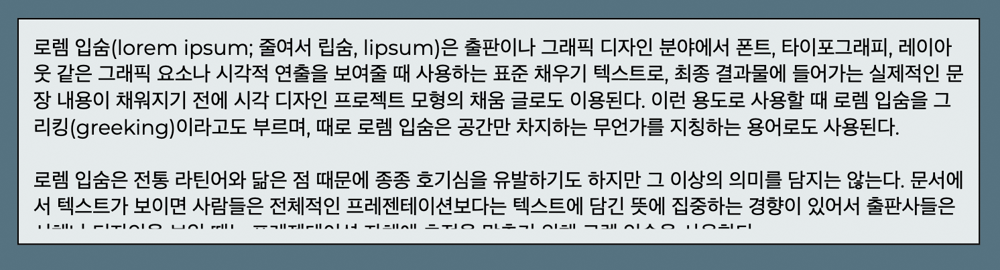

Clipping Indicator
애플 키노트 앱은 개체의 크기보다 많은 문자열이 포함되면, 개체의 아래쪽에 [+] 기호를 표시해 전체 문자열이 화면에 표시되지 않고 있음을 나타내는 기능이 있습니다. 이를 클리핑 표시자(Clipping indicator)라 부르는데, 만들고 있던 웹앱에서도 비슷한 기능을 넣어달라는 요청을 받아 구현해보았습니다.

위 화면에서와 같이 문자열이 다 표시되지 않았다는 것을 사용자가 시각적으로 인지할 수 있는 경우에는 바로 조정할 수 있지만, 행간에서 잘린 경우에는 알아차리기가 어렵습니다.
위와 같이 실제 문자열은 더 많은 공간을 필요로 하는데, 이런 경우 클리핑 표시자가 있다면 사용자는 문제를 빨리 인지하고 효과적으로 조정할 수 있게 됩니다. 애플 키노트에 구현된 클리핑 표시자는 다음과 같이 동작합니다.
- 개체의 크기보다 더 많은 내용을 담고 있는 경우, 개체의 하단에
+기호로 클리핑 되었음을 표시합니다. 개체를 선택하지 않은 경우에도 항상 표시됩니다. - 클리핑 표시자를 이용해 개체의 크기를 조정할 때 사용하는
선택 핸들과 같은 방법으로 개체의 세로 크기를 조정할 수 있습니다. - 클리핑 표시자를 더블클릭하면 내용이 완전히 표시될 수 있는 정도로 개체의 크기를 자동 조절합니다.
이제 어떻게 구현했는지 알아봅시다.
offsetHeight & clientHeight & scrollHeight
HTML 개체가 가지는 크기 속성 중, 높이 정보를 가진 속성은 다음의 세 가지가 있습니다.
clientHeight: padding을 포함한 표시된 콘텐츠의 높이 값.offsetHeight: clientHeight에 border, 가로 스크롤바가 있는 경우 그 높이를 포함한 값.scrollHeight: padding을 포함한 콘텐츠의 실제 높이 값. 충분한 공간이 있는 경우에는 clientHeight와 같습니다.
CodePen에서 직접 확인해보기: https://codepen.io/lqez/pen/qBdVqKB
See the Pen Multiple height values by Hyunwoo Park (@lqez) on CodePen.
Check overflow on resizing
Veryslide는 편리한 코딩을 위해 개체의 상태(state)가 변경될 때, 자동으로 on_<state name> 이름을 가진 함수가 호출되는 기능이 있습니다. 이를 이용해 개체의 height 값이 변경될 때, 자동으로 호출된 on_height에서 높이 정보를 읽어 문자열이 표시될 공간보다 문자열이 길다면 클리핑 표시자를 표시하는 방식으로 구현해보았습니다.
하지만 이 구현에는 문제가 있었습니다. 문자열이 잘리지 않고 완전히 표시되는 것을 따져보기 위해서는 문자열을 담고 있는 개체의 크기 뿐만 아니라, 문자열의 크기, 굵기, 서체, 행간 등 여러 요소가 관여하는데, 이에 대응하는 상태의 값이 변경될 때를 고려하지 않았기 때문입니다.
ResizeObserver
이 문제를 해결하기 위해서는 개체의 모든 상태가 변경될 때마다 크기를 검사해 클리핑 여부를 따져봐야 합니다. 하지만 특정 요소가 달라져도 매번 크기가 달라지는 것은 아니기 때문에 비효율적이라 생각해, ResizeObserver를 도입하였습니다.
ResizeObserver는 지정한 개체의 크기가 달라지는 경우에 지정한 함수를 실행하는 관찰자입니다. 비교적 최신의 크롬, 파이어폭스, 엣지에서는 기본으로 지원하지만, 2020년 3월 기준으로 Can I use… 사이트에 따르면 71.08% 정도의 사용자만이 이 기능을 문제 없이 사용할 수 있는 상태입니다.
const resizeObserver = new ResizeObserver(entries => {
// 달라진 개체의 정보를 담고 있는 ResizeObserverEntry 목록이 entries로 넘어옵니다.
});
resizeObserver.observer(element); // element의 변화를 관찰합니다.
resizeObserver.observer(another_element); // 하나의 관찰자가 여러 개체를 관찰합니다.
resizeObserver.unobserve(element); // 더 이상 element를 관찰하지 않습니다.
관찰자 생성시에 콜백 함수를 지정하는데, 해당 함수는 관찰하던 개체들 중 크기가 변경되면 ResizeObserverEntry의 목록을 인자로 받습니다. 이를 이용해 달라진 개체가 어떤 개체이고, 어떤 크기로 달라졌는지 확인할 수 있습니다.
Veryslide는 문자열을 담고 있는 textNode와, textNode를 포함하고 있는 clipNode를 ResizeObserver를 통해 관찰하고, 변화가 있는 경우에 클리핑 여부를 확인해 동작하도록 했습니다. (TextBox.js)
TextBox.js
// Set observers for overflow check
this.observer = new ResizeObserver(this.check_overflow.bind(this));
this.observer.observe(this.textNode);
this.observer.observe(this.clipNode);
Polyfill
resize-observer-polyfill을 이용하면, Internet Explorer 9을 포함한 대부분의 미지원 브라우저에서도 같은 방법으로 ResizeObserver를 사용할 수 있습니다. 이 폴리필은 기본적으로 window.resize 이벤트를 구독하여 지정된 개체의 크기 변경에 반응하도록 되어 있으며, 추가로 transitionend 이벤트를 구독하여 CSS 트랜지션 등으로 인한 크기 변경에 반응합니다. 뿐만 아니라, MutationObserver 또는 DOMSubtreeModified 이벤트를 이용해 개체 내부에 변경이 있는 경우도 대응합니다.